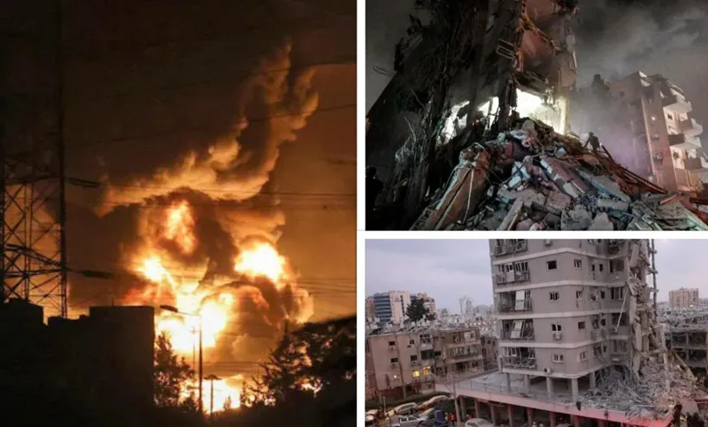

ისრაელსა და ირანს შორის ომი.
ისრაელში ირანის იერიშის შედეგად 8 ადამიანი დაიღუპა, არიან დაშავებულები და დაკარგულები - პარალელურად გრძელდება ისრაელის შეტევა.
ისრაელში ირანის იერიშის შედეგად 8 ადამიანი დაიღუპა, არიან დაშავებულები და დაკარგულები - პარალელურად გრძელდება ისრაელის შეტევა.
ავსტრიული მედია ავრცელებს იმ ბინიდან კადრებს, სადაც ცნობილი ქართველი ქირურგი ოპერაციებს უკანონოდ ატარებდა - რა ახალი დეტალები ხდება ცნობილი სკანდალურ საქმეზე.
ეთერ ლიპარტელიანი გახდა პირველი ქართველი ქალი, რომელმაც მსოფლიოს ჩემპიონატში გაიმარჯვა.
რუსთაველის გამზირზე საპროტესტო აქცია მიმდინარეოს.
"საქართველოს მოსახლეობის უმრავლესობა, 53% ემხრობა, რომ ხელისუფლების წინააღმდეგ მიმართული პროტესტი გაგრძელდეს" - ISSA